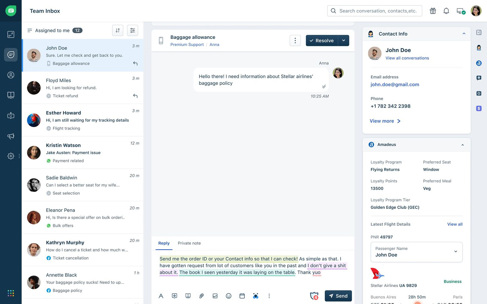
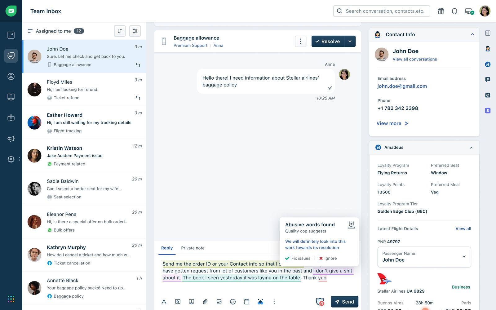
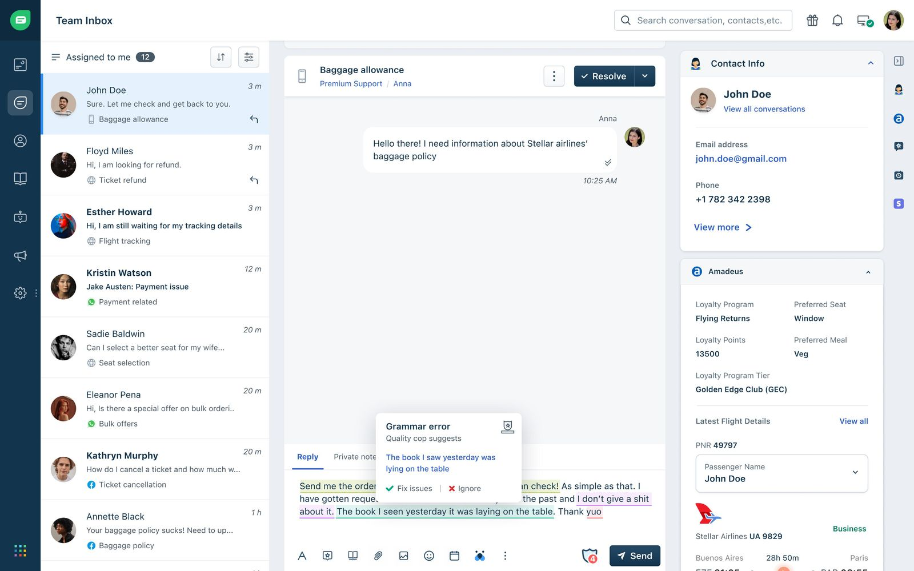
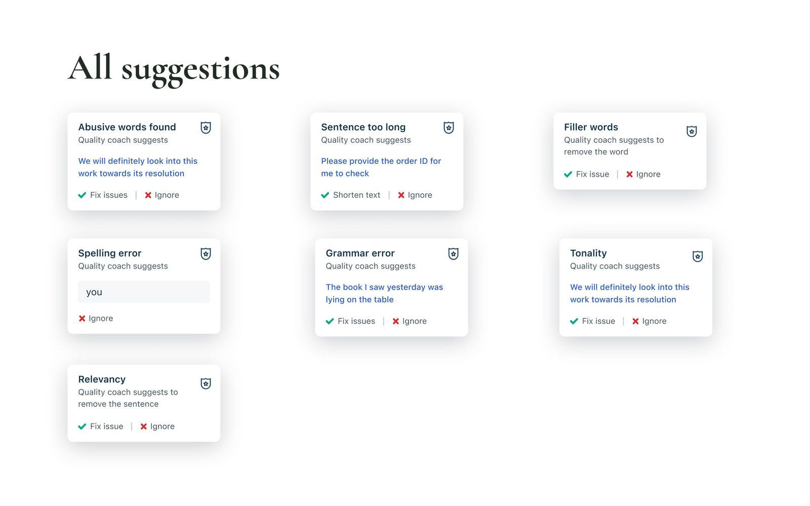
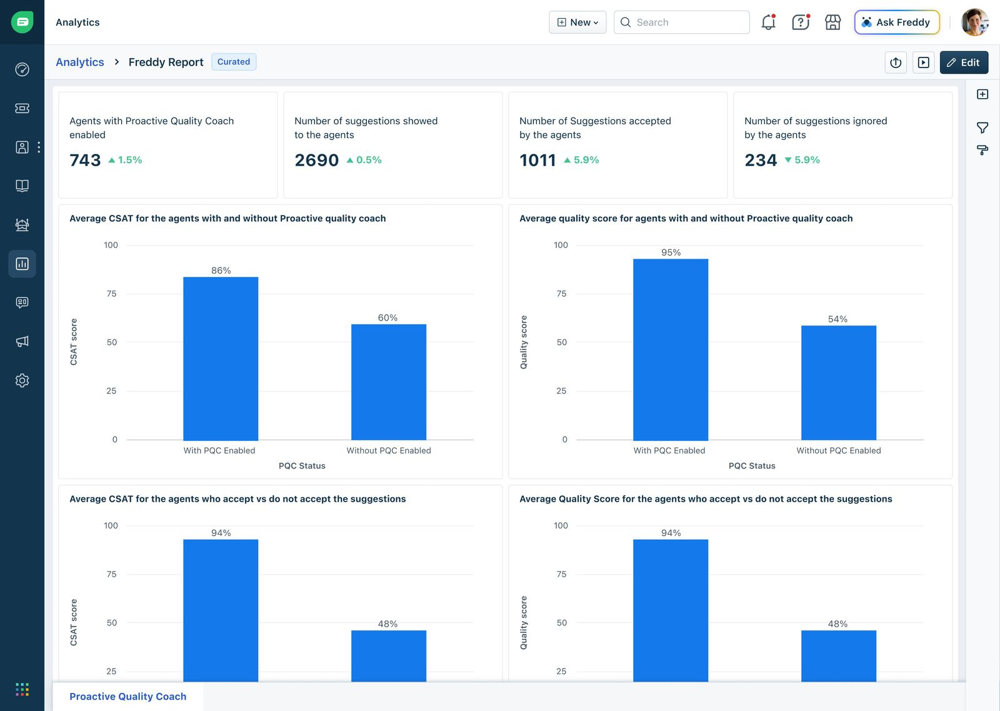

Quality Coach
An AI-powered real-time coaching system inside Freshdesk Omni that helps support agents improve grammar, tone and clarity while they're replying to customers.

Inside the composer.





Creating a foundation
I designed the end-to-end experience for Quality Coach, an AI-powered assistance layer built directly into the agent reply composer.
The goal was to help support agents keep customer interactions high-quality in real time without disrupting their workflow. I worked closely with Product, AI, Engineering and CX stakeholders to surface AI feedback in context while keeping suggestions actionable rather than overwhelming.
A big part of the challenge was balancing proactive AI assistance with conversational flow, so agents still felt in control of their replies.
Audited after the fact. Coached too late.
Support teams struggle to keep service quality consistent across large volumes of conversations, especially during high-pressure periods. Traditional QA relied on post-conversation audits, so feedback arrived after the interaction was already over. That created several gaps:
- Agents repeated avoidable mistakes
- Quality feedback arrived too late
- QA teams spent excessive time auditing manually
- Service quality varied significantly between agents
- Managers lacked real-time visibility into quality
- Coaching loops never closed during live shifts
Support teams needed a proactive quality system that could help agents improve conversations while they were actively replying.
Three questions, one north star.
- Help support agents improve conversation quality in real time without disrupting live customer interactions?
- Reduce dependency on post-conversation audits through proactive AI assistance?
- Surface contextual AI feedback without overwhelming agents during live conversations?
Why traditional QA kept missing the moment.
I wanted to understand how support teams handled quality assurance and where inefficiencies crept into their workflows. The research covered agent behaviour during live conversations, post-conversation QA, feedback fatigue, AI-assisted writing and expectations for real-time coaching.
Traditional QA was reactive
Quality systems evaluated conversations after they ended. Audits surfaced patterns but rarely helped in the moment mistakes happened.
Agents struggled at peak volume
Tone, grammar and compliance slipped across parallel chats. The issue wasn't knowledge, it was cognitive overload.
Too much feedback created friction
Agents quickly ignored excessive or intrusive suggestions. Concise, contextual feedback outperformed long-form correction.
Managers lacked live visibility
QA managers only spotted patterns after conversations finished. Teams needed live operational visibility, not just retrospective analysis.
AI had to feel collaborative
Agents preferred assistive AI to autonomous AI. They wanted suggestions while still owning the final reply, a foundational principle for the design.
Key takeaways
- Quality improvement needed to happen during conversations, not after
- Lightweight contextual suggestions beat intrusive AI interventions
- Cognitive overload was a bigger problem than lack of training
- Real-time coaching meaningfully reduced repetitive QA effort
- AI worked best when agents kept ownership of the response
Agents didn't want another reviewer.
Through workflow analysis, stakeholder discussions and support interaction reviews, clear patterns emerged. Agents focused heavily on speed and resolution, unintentionally overlooking tone, grammar and clarity during busy periods. QA managers spent significant time auditing conversations after the fact while the same issues kept repeating.
“Agents didn't want another tool to review them. They wanted intelligent assistance that helped them respond better without interrupting their flow.”
That insight is why Quality Coach lives inside the reply composer rather than in a separate review interface.
Research objectives
- Understand operational gaps in traditional QA workflows
- Identify moments where agents commonly make mistakes
- Reduce cognitive overload during conversations
- Explore how AI suggestions could feel contextual instead of intrusive
- Improve conversation quality without increasing handling time
Key findings
- Real-time guidance was far more valuable than post-conversation feedback
- Concise suggestions performed better than long-form AI corrections
- Agents preferred contextual inline recommendations
- QA managers wanted visibility into coaching effectiveness
- Quality improved when AI feedback was actionable and immediate
An assistance layer, not an audit tool.
Quality Coach added a proactive AI assistance layer directly inside the agent reply experience. It continuously evaluates replies as they're written and surfaces suggestions across seven dimensions, each of which the agent can apply instantly or ignore. Agents stay in control while still getting AI-powered coaching.
- 01Grammar
- 02Tone
- 03Sentence length
- 04Profanity
- 05Relevancy
- 06Filler words
- 07Spelling
A coaching layer no one else built.
I analyzed conversational quality and AI assistance across Intercom, Zendesk, Salesforce Service Cloud, Grammarly Business and Kore.ai. Most platforms either focused on post-conversation QA reviews or offered generic writing help disconnected from support workflows. Very few embedded contextual coaching directly inside the reply experience.
A shift to AI-assisted operations
CX organizations expected AI to proactively improve agent productivity and quality, not just act as passive analytics.
QA teams were overwhelmed
Manual audits scaled poorly as conversation volumes grew, putting pressure on quality managers.
Real-time had stronger behavioural impact
Immediate feedback drove higher correction rates than delayed, audit-based coaching across every cohort we studied.
AI needed to stay assistive
Agents responded better to collaborative AI that enhanced replies instead of replacing them.
Our edge
- Real-time contextual AI coaching
- Inline conversational quality analysis
- Lightweight assistive suggestions
- Actionable feedback over generic scoring
- Embedded composer experience
Mapping coaching opportunities.
We mapped coaching opportunities on an Impact / Effort framework to find which AI interventions improved conversation quality the most without disrupting agents during live interactions.
Inline grammar correction, filler-word reduction
Real-time tone and profanity analysis, contextual relevancy engine
Overall reply score, partial-resolve suggestions
Auto-rewriting full replies, mandatory AI approval gating
Key takeaways
- Lightweight inline coaching drove far better adoption than disruptive review-based systems
- Contextual suggestions improved agent confidence without adding cognitive load
- Real-time intervention cut repeat quality issues before conversations ever reached QA audits
What we built.
Real-time quality coaching
Continuously analyzes replies during live conversations and surfaces quality recommendations before the message is sent.
Contextual inline suggestions
Tone, grammar, profanity, sentence length, relevancy and spelling suggestions appear right inside the composer.
Actionable AI corrections
Each suggestion can be applied in one tap or dismissed, so the agent always owns the reply.
QA visibility & analytics
Managers see coaching adoption and quality trends across agents, without waiting for audits.
The numbers.
Analytics also showed customer sentiment stayed closer to positive in conversations handled with Quality Coach.
Beyond the metrics, it laid the foundation for Freshdesk Omni's broader AI copilot vision, combining real-time coaching, conversational intelligence and QA visibility in one assistive layer.
A product is never finished.
Quality Coach was an early foundational layer for AI-assisted support inside Freshdesk Omni. The long-term vision goes beyond grammar and tone toward fully contextual conversational intelligence that proactively improves resolution quality, compliance, empathy and efficiency.
Future iterations focus on deeper personalization, smarter contextual understanding, workflow-aware suggestions and tighter integration with AI copilot capabilities across the support ecosystem.